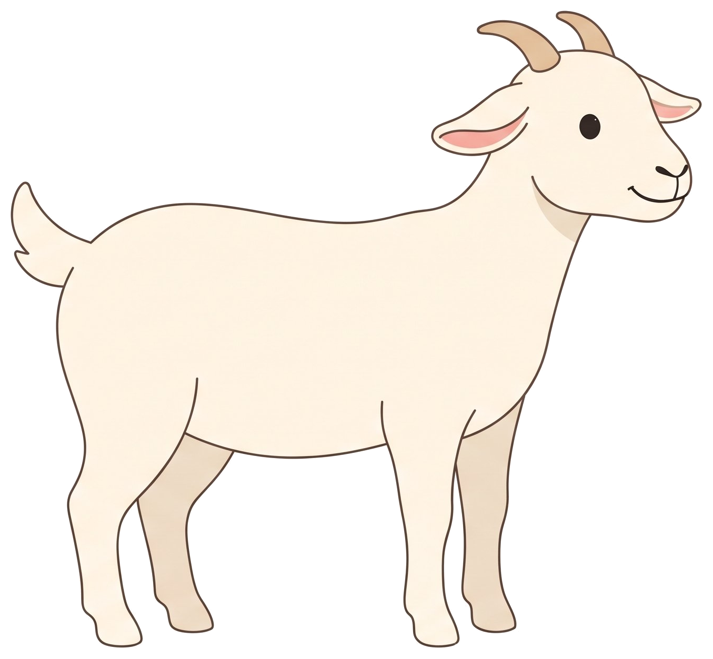

Tugas Sistem Multimedia · Visual • Audio • Animasi
Muhamad Yusuf · 242502040108
Klik kambingnya, atau pakai tombol di bawah
Karakter kambing flat illustration, gaya simple modern clean, dibuat dengan AI Gemini: berdiri, jalan, makan, dan lompat, di atas background padang rumput.
Suara embikan kambing (“mbek”). Tekan tombol “Suara: Mbek!” atau klik kambingnya. Sumber suara: domain publik, lihat kredit di bawah.
Setiap aksi punya videonya sendiri dari AI Gemini: jalan, makan, dan lompat, masing-masing 10 detik. Di stage, video diputar tanpa suara supaya suara embikan tetap jelas.
Ketiga video di bawah ini adalah aset gerak utamanya. Tombol di stage memutar video yang sama, jadi yang dilihat di stage dan di bawah ini konsisten.